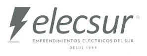
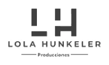
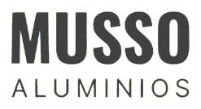

Dejá de trabajar
dentro de tu negocio.
Empezá a liderarlo.
Trabajás de sol a sol, todo pasa por vos y a fin de mes la plata no alcanza. Te ayudamos a ordenar los números, delegar con criterio y construir un equipo que funcione sin que tengas que estar en todo.
¿Te suena conocido?
Trabajamos con dueños de negocios de 2 a 30 empleados cuyas empresas dependen demasiado de ellos para todo — y que están listos para que deje de ser así.
Tu facturación no crece aunque trabajes más horas, y a fin de mes la plata no alcanza. No tenés números claros de cuánto ganás de verdad.
Te cuesta plata: hay margen que se te escapa todos los meses sin que lo veas.
Tus empleados necesitan que estés en todo. Si te vas un día, algo falla: la empresa no funciona sin vos.
Te cuesta libertad: si no podés soltar, el negocio te tiene a vos — no vos a él.
Manejás el negocio a ojo y por sensación. Tomás decisiones importantes sin información real.
Te cuesta tiempo: cada semana son horas tuyas apagando incendios que no vuelven.
La buena noticia: esto no es falta de esfuerzo. Son cuellos de botella concretos, y se resuelven.
- Comercios, distribuidoras y servicios
- Negocios que dependen del dueño
- Dueños que quieren liderar, no operar
- Mar del Plata y todo el país
Cómo trabajamos
Un proceso claro desde el primer contacto hasta los resultados.
Los 5 pilares de un negocio que se sostiene solo
No hay un pilar más importante que otro: hay uno que hoy está más flojo que el resto y es el que define tu techo. Cada pilar tiene en Fluir un referente que lo trabaja con vos.
Resultados reales, negocios reales
Más de 100 empresas transformadas en 10 años. Estos son algunos de sus resultados.



¿Quiénes somos?

Vanesa Chiesa
Licenciada en Administración de Empresas. Más de 15 años acompañando negocios en transformación. Especialista en arquitectura organizacional y liderazgo.

Antonela Dello Russo
Conduce el área de consultoría comercial y financiera. Especialista en KPIs, finanzas y crecimiento medible.
Cómo se ve tu negocio cuando fluye
- Tu equipo ejecuta con tu estándar sin necesitarte en cada paso.
- Te tomás vacaciones y el negocio sigue facturando.
- Tenés un tablero con los 5 números que importan: decidís con datos, no con corazonadas.
- Tu tiempo se destina a crecer, no a apagar incendios.
La Rueda de tu Negocio
20 preguntas, 5 pilares y una rueda que muestra dónde estás parado. Al final te devolvemos un resumen estratégico con lo primero que hay que mover. Sin costo.
Descargá gratis la guía
"Los 3 cuellos de botella de tu negocio"
Los 3 frenos más comunes que hacen que todo dependa de vos — y cómo empezar a resolverlos.
¿Listo para que tu negocio funcione sin vos?
Empezá por el diagnóstico gratis de 45 minutos: salís con tu nivel de dependencia y un plan concreto.
Hacé la Rueda de tu Negocio